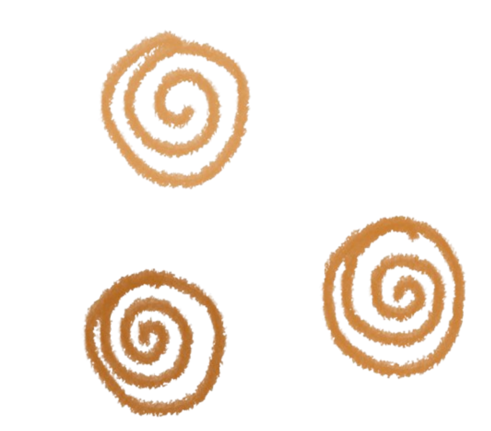
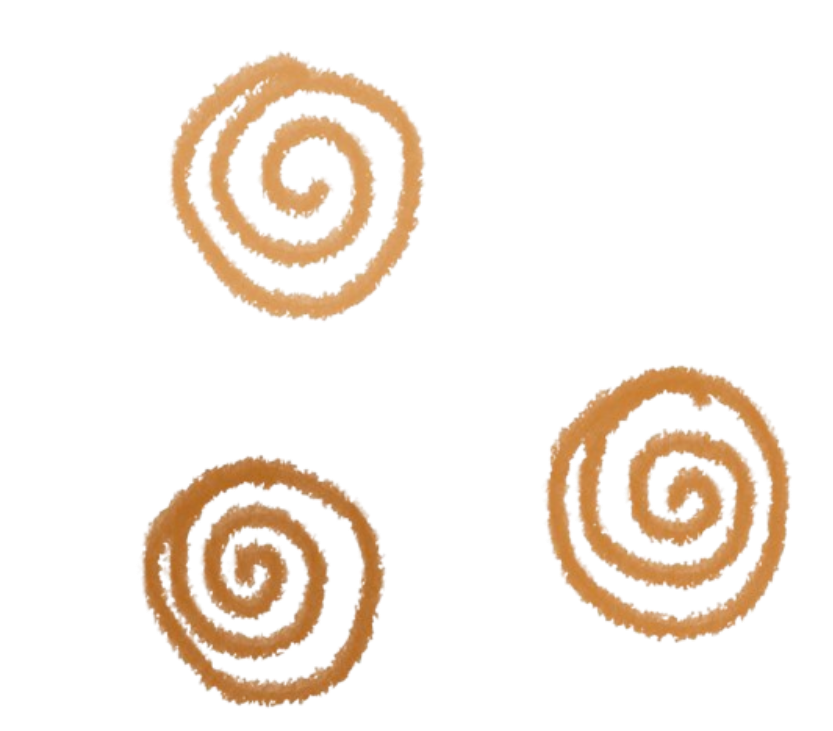

Portfolio
Jubilation of the Ghostly Tree
- Year Created: 2022
- Medium: Watercolor
- Dimensions: 42 x 59.4 cm (16.5 x 23.5 in)
This piece was my first major project composed of watercolor. The prompt was to illustrate a portrait based on Gustav Klimt's "Tree of Life" in my art style and surround my tree with elements that represented me as a person. I heavily emphasized cooler tones by transitioning lighter blues to darker violets. I believed this color scheme was suitable, as I liked to connect cooler and saturated hues to my identity at the time. I struggled to accommodate this medium's properties, and I found it especially hard to blend the contrasting colors together. However, I managed to overcome these obstacles to produce a piece I am still proud of today.
Multicolored Owl and Flora
- Year Created: 2022
- Medium: Crayola Broad Line Markers
- Dimensions: 21 x 29.7 cm (8.27 x 11.69 in)
I illustrated this piece primarily with stationary materials. The composition was mostly inspired by Yayoi Kusama, a Japanese artist renowned for her work with obsessively repeating and colorful patterns. I chose the subject matter to be an owl surrounded by foliage because I believed real-life scenery would be the best canvas to apply Kusama's style. I designed the piece with random and contrasting colors accompanied by random patterns in an attempt to replicate her work. Looking back at the final product, I believe I did a great job of doing so; however, I wish there were more consistency in the pattern and color scheme.
Snowy Owl Charcoal Study
- Year Created: 2023
- Medium: Charcoal
- Dimensions: 21 x 29.7 cm (8.27 x 11.69 in)
After practicing using the charcoal media with the grid method, I created a portrait of a snowy owl in a dynamic position. With its primarily black-and-white appearance, a snowy owl was the perfect specimen to experiment with charcoal's properties. I found applying every little detail in each grid to perfect the final product's tone very enjoyable. I appreciated how simple it was to establish mid-tones from the darkest blacks to the brightest whites; it helped make the piece look realistic. I only wish I had not made multiple mistakes when sketching drafts, because I made numerous mistakes when applying the charcoal, which was difficult to hide.
Mysterious Child
- Year Created: 2024
- Medium: Pencil Sketch (LED)
- Dimensions: 14.8 x 21 cm (5.82 x 8.26 in)
This piece was one of the many pencil-only sketches I made during my free time. I mostly see myself as a sketch artist, and I've been seeking to search for new ways to illustrate and compose meaningful pieces with just a pencil. This portrait does not have any clear meaning; however, I was aiming for an eerie and peculiar mood, which I believe I fulfilled exceptionally. I am especially proud of the way I illustrated the clothing folds and the culminating wisps in the background. If I were to return to this piece in the future, I would see to it that the shading properly transitions between tones and that the flow of direction, which grabs the viewer's eye, goes in one direction.
Sitting Child in Sky
- Year Created: 2024
- Medium: Charcoal, Watercolor, Acrylic
- Dimensions: 42 x 59.4 cm (16.5 x 23.5 in)
This portrait was one of my bigger ones, with the canvas spreading across a quarter of the large desk I was working on. Initially, I thought it was a silly idea to combine charcoal and watercolor, but I was surprised to see how well it turned out. I aimed for this piece to resemble a more somber yet peaceful tone. I wished for the viewer to be washed in a relieved mood as they imagined a cobalt sky surrounded by pure white clouds. The piece may just be rendered in black and white, but that didn't mean it didn't resemble such colorful scenery. I worked especially hard while illustrating this piece, ensuring every single tone and detail was accurate. To this day, I am still glad to see that my efforts paid off.


 
